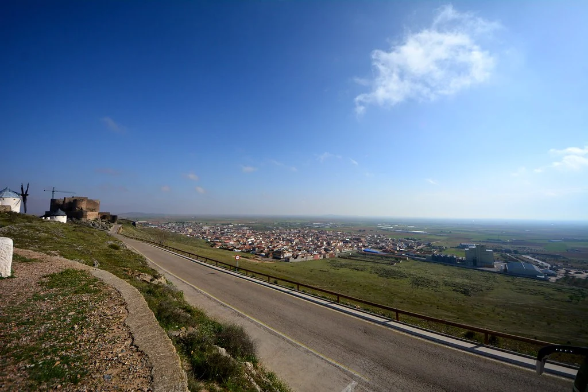
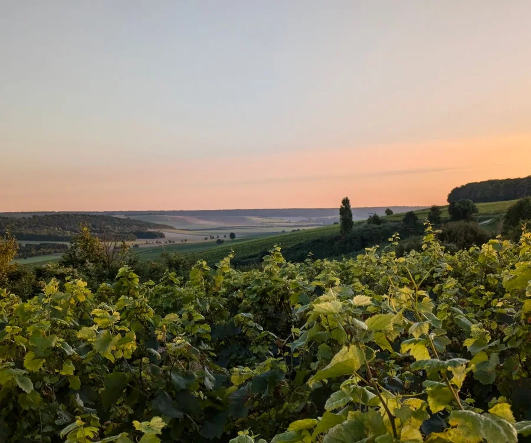
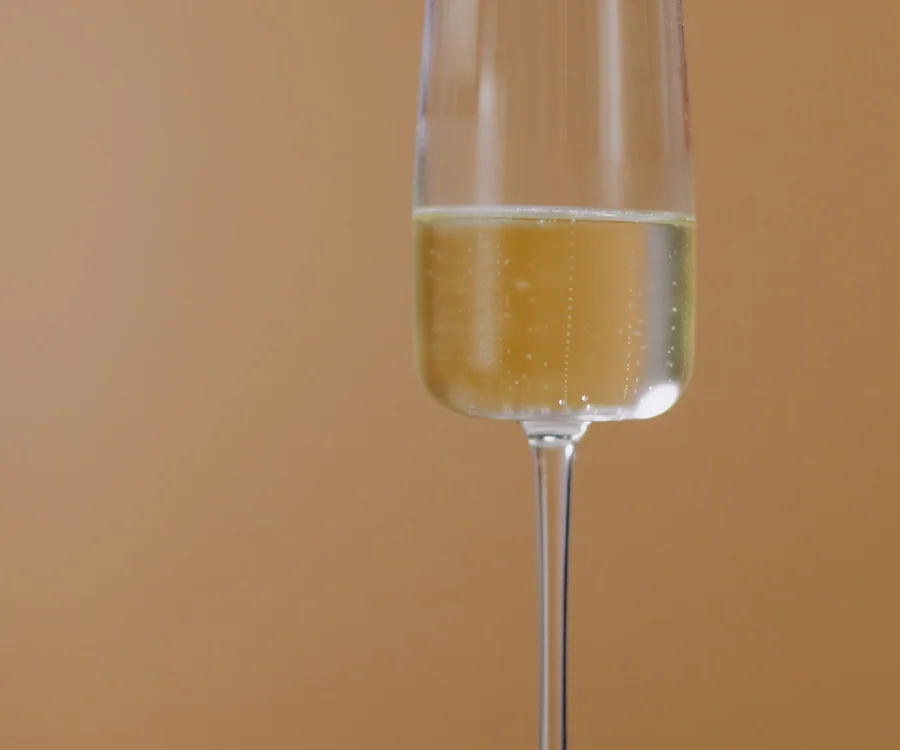
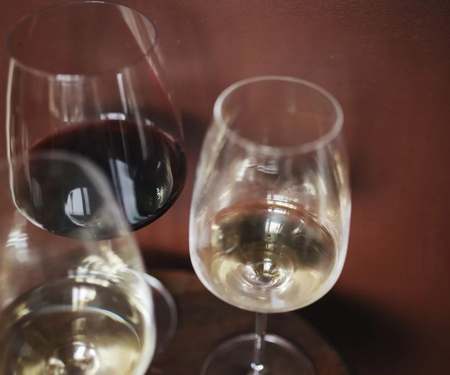

Raíz local
CONSUEGRA · TOLEDO
Calderico
Marca emblemática de Vinícola Castillo de Consuegra, cooperativa que forma parte de la tradición vinícola del municipio.
Vinícola Castillo de ConsuegraConocer su historia
Desde el corazón de La Mancha
Sabores tradicionales, producto y sobremesas para recordar. Bienvenido a El Consaburense.
EL CONSABURENSE · CONSUEGRA, TOLEDO

En El Consaburense queremos que cada visita sea una ocasión para disfrutar: un desayuno, unas tapas al terminar la jornada, una comida en familia o una cena con amigos.
Nos inspira el carácter de Consuegra, sus calles, sus molinos y la hospitalidad de La Mancha. Ven a descubrir nuestros platos y a sentirte como en casa.
Planifica tu visitaEntrantes, guisos, carnes, arroces, asados y postres caseros. Elige una categoría de nuestra carta para llevar.


Ver la carta completa para llevar · Arroces, asados y pescados por encargo
Preparamos tus platos recién hechos. Para conocer precios, encargos especiales y disponibilidad, llámanos.
¡Haz tu pedido! 925 09 71 73¿Tienes alguna duda? Escríbenos ↗Carta para llevar ↗Encargos especiales ↗Un recorrido por las bodegas de Consuegra y por vinos destacados de Castilla-La Mancha. Tradición local, diferentes variedades y referencias premiadas para descubrir la riqueza de nuestra región.
Marca emblemática de Vinícola Castillo de Consuegra, cooperativa que forma parte de la tradición vinícola del municipio.

Patrimonio manchegoUna etiqueta local inspirada en la silueta de los molinos y el castillo que identifican a Consuegra.
Tinto Tempranillo de Bodegas Altovela, medalla de oro en los Premios a la Calidad de la D. O. La Mancha 2026.
Tempranillo Gran Reserva de Bodegas El Progreso reconocido con medalla de oro en 2026.

Espumoso · Oro 2025Espumoso de Bodegas Alcardet premiado con oro en los Premios a la Calidad de 2025.

Dulce · Oro 2026Blanco naturalmente dulce de Finca Antigua, galardonado con medalla de oro en 2026.
Selección enológica informativa, no es la carta de vinos confirmada del restaurante. Consulta al establecimiento si alguna referencia está disponible. Fotografías ambientales ilustrativas: no muestran necesariamente las botellas ni viñedos de estas bodegas. Créditos fotográficos. Contenido dirigido a mayores de edad. Consumo responsable.
¿Una fecha especial en mente? Cuéntanos cómo la imaginas y descubre las opciones para celebrarla con nosotros.
Una comida o cena para celebrar con quienes más quieres. Consulta opciones para vuestro grupo.
Cuéntanos tu ideaHabla con nosotros sobre la fecha, el número de invitados y las posibilidades para vuestra celebración.
Cuéntanos tu ideaCuéntanos qué tienes en mente y pregunta por disponibilidad y alternativas que podamos ofrecer.
Cuéntanos tu ideaComidas de empresa, reuniones familiares o consultas de catering. Pregúntanos si podemos adaptarnos a tu idea.
Cuéntanos tu ideaPropuestas y servicios sujetos a disponibilidad y confirmación del restaurante.
Hablemos de tu celebraciónUna selección de opiniones reales compartidas en Google por quienes nos han visitado.
“La comida buenísima, las migas y el pisto espectacular”
“Amables, la música tranquila, la comida agradable...”
“Buen sitio para comer, menú variado y muy rico.”
Citas abreviadas de reseñas públicas. Las valoraciones pueden cambiar; consulta el perfil de Google para ver las opiniones completas y actuales. Fuentes de las reseñas.
Entre molinos, historia y rincones con encanto. Pulsa en una fotografía para verla en grande y entra en «Saber más» para conocer cada lugar en la web oficial de Turismo de Consuegra.
La silueta más reconocible de Consuegra.
Saber másUna fortaleza que lleva siglos mirando a La Mancha.
Saber másPiedra, ladrillo y siglos de historia consaburense.
Saber másEl corazón del pueblo y uno de sus lugares de encuentro.
Saber másImágenes reales de Consuegra; pulsa para ampliarlas. Fotografías de Wikimedia Commons y autores originales. Créditos y licencias.
Que el plan no termine al salir de la plaza. Si vienes a Consuegra por una feria, una función o simplemente a pasar el día, echa un vistazo a lo que hay y nos llamas para comer.
 CONSUEGRA · TOLEDO
CONSUEGRA · TOLEDO
Fechas consultadas en fuentes municipales. La programación puede cambiar; compruébala antes de salir.
Estas citas ya se celebraron. En el calendario del Ayuntamiento encontrarás los próximos planes de Consuegra.
Consultar próximas actividadesLa Feria 2026 se celebró del 20 al 25 de septiembre. Puedes explorar sus actos como orientación, pero la programación de la próxima edición aún debe confirmarse oficialmente.
Para saber qué hay hoy, este fin de semana o en próximas fechas, lo mejor es la agenda oficial. ¿Te apetece completar el plan con una buena comida? Consúltanos mesa o llámanos.
¿Vienes a comer o estás preparando algo especial? Cuéntanos lo que necesitas y nuestro equipo te responderá personalmente.
Dinos qué día te viene bien, a qué hora y cuántas personas seréis. Te ayudaremos a encontrar mesa.
Quiero reservarCumpleaños, bautizos, comuniones, bodas o encuentros de grupo. Nos encantará conocer tu idea.
Planear mi celebraciónEn plena tierra de molinos, con mucho por descubrir a tu alrededor.
Av. Alcázar de San Juan, 58
45700 Consuegra, Toledo
Reservas y consultas: 925 09 71 73
Consulta el horario actualizado y los datos de contacto en la ficha del establecimiento antes de desplazarte.